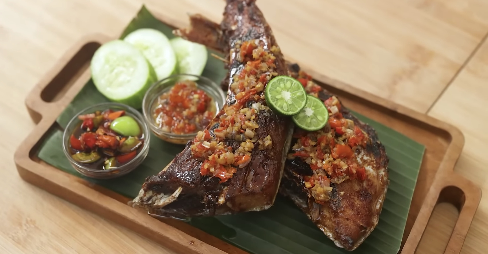

Rahang Tuna Bakar
Rahang Tuna khas Manado adalah hidangan laut dengan bagian rahang ikan tuna yang dimarinasi bumbu rempah pedas, kemudian dibakar hingga harum dan gurih. Cita rasanya kuat, pedas, dan kaya rempah khas Sulawesi Utara yang sangat menggugah selera.
Bahan-bahan:
- 1 kg rahang tuna segar
- 1 buah jeruk nipis (untuk marinasi)
- 3 sdm minyak goreng
Bumbu Halus:
- 8 siung bawang merah
- 5 siung bawang putih
- 10 cabai merah keriting
- 5 cabai rawit (sesuai selera pedas)
- 2 cm jahe
- 2 cm kunyit
- 1 sdt garam
- 1 sdt gula
- 1 sdm kecap manis (opsional)
Cara Membuat:
- Bersihkan rahang tuna, lalu lumuri dengan jeruk nipis agar tidak amis. Diamkan 10–15 menit.
- Haluskan semua bumbu, lalu tumis dengan sedikit minyak sampai harum.
- Masukkan rahang tuna ke dalam bumbu, aduk rata dan diamkan 15–20 menit agar meresap.
- Panggang rahang tuna di atas teflon atau bara api sambil dioles sisa bumbu.
- Bolak-balik hingga matang dan permukaan sedikit kecokelatan.
- Sajikan hangat dengan sambal dabu-dabu dan nasi putih.